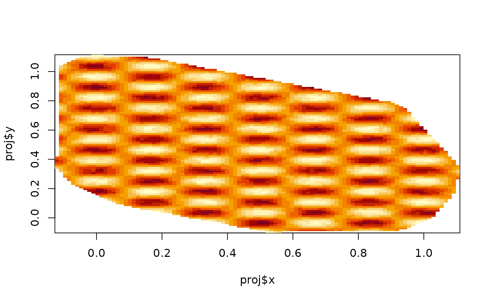

Calculate evaluation information and/or evaluate a function defined on a mesh or function space.
Usage
fm_evaluate(...)
# Default S3 method
fm_evaluate(mesh, field, ...)
# S3 method for class 'fm_evaluator'
fm_evaluate(projector, field, ...)
# S3 method for class 'fm_basis'
fm_evaluate(basis, field, ...)
fm_evaluator(...)
# Default S3 method
fm_evaluator(...)
# S3 method for class 'fm_mesh_2d'
fm_evaluator(mesh, loc = NULL, lattice = NULL, crs = NULL, ...)
# S3 method for class 'fm_mesh_1d'
fm_evaluator(mesh, loc = NULL, xlim = mesh$interval, dims = 100, ...)
fm_evaluator_lattice(
mesh,
xlim = NULL,
ylim = NULL,
dims = c(100, 100),
projection = NULL,
crs = NULL,
...
)
# S3 method for class 'inla.mesh'
fm_evaluator(mesh, ...)
# S3 method for class 'inla.mesh.1d'
fm_evaluator(mesh, ...)Arguments
- ...
Additional arguments passed on to methods.
- mesh
An
inla.meshorinla.mesh.1dobject.- field
Basis function weights, one per mesh basis function, describing the function to be evaluated at the projection locations
- projector
An
fm_evaluatorobject.- basis
An fm_basis object.
- loc
Projection locations. Can be a matrix,
SpatialPoints,SpatialPointsDataFrame,sf,sfc, orsfgobject.- lattice
An
fm_lattice_2d()object.- crs
An optional CRS or inla.CRS object associated with
locand/orlattice.- xlim
X-axis limits for a lattice. For R2 meshes, defaults to covering the domain.
- dims
Lattice dimensions.
- ylim
Y-axis limits for a lattice. For R2 meshes, defaults to covering the domain.
- projection
One of
c("default", "longlat", "longsinlat", "mollweide").
Methods (by class)
fm_evaluate(default): The default method callsproj = fm_evaluator(mesh, ...), followed byfm_evaluate(proj, field).
Functions
fm_evaluate(): Returns the field function evaluated at the locations determined by anfm_evaluatorobject.fm_evaluate(mesh, field = field, ...)is a shortcut tofm_evaluate(fm_evaluator(mesh, ...), field = field).fm_evaluator(): Returns anfm_evaluatorlist object with evaluation information. Theprojelement is afm_basisobject, containing (at least) a mapping matrixAand a logical vectorok, that indicates which locations were mappable to the input mesh. Forfm_mesh_2dandinla.meshinput,projalso contains a matrixbaryand vectort, with the barycentric coordinates within the triangle each input location falls in.fm_evaluator(default): The default method callsfm_basisand creates a basicfm_evaluatorobjectfm_evaluator(fm_mesh_2d): The...arguments are passed on tofm_evaluator_lattice()if nolocorlatticeis provided.fm_evaluator_lattice(): Creates anfm_lattice_2d()object, by default covering the input mesh.fm_evaluator(inla.mesh): Converts legacyinla.meshtofm_mesh_2dand calls thefm_evaluatormethod again.fm_evaluator(inla.mesh.1d): Converts legacyinla.meshtofm_mesh_1dand calls thefm_evaluatormethod again.
Author
Finn Lindgren finn.lindgren@gmail.com
Examples
if (TRUE) {
n <- 20
loc <- matrix(runif(n * 2), n, 2)
mesh <- fm_rcdt_2d_inla(loc, refine = list(max.edge = 0.05))
proj <- fm_evaluator(mesh)
field <- cos(mesh$loc[, 1] * 2 * pi * 3) * sin(mesh$loc[, 2] * 2 * pi * 7)
image(proj$x, proj$y, fm_evaluate(proj, field))
}

# \donttest{
# if (require("ggplot2") &&
# require("ggpolypath")) {
# ggplot() +
# gg(data = fm_as_sfc(mesh), col = field)
# }
# }